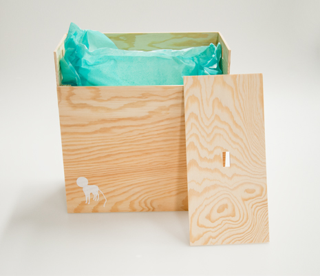

Helena Ťapajnová



Obalový design
Z obalu prezentační místo
Kompletní servis pro Helenu Ťapajnovou a její porcelánové lampičky. Jedna překližková krabice slouží jako přenosný a ochranný obal, a zároveň po rozložení jako prodejní a prezentační místo. Vzniklo také logo (inspirováno tetelením horkého vzduchu nad sklářskou pecí), katalog, plakáty a vizitky.